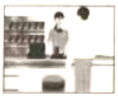

2023年北京市中考英语真题 · 单项填空 第1、2、3、4、5、6、7、8、9、10、11、12题 · 对应解析
1. My sister enjoys singing and ________ favorite subject is music.
A. hisB. herC. yourD. their
【答案】B
【解析】
【详解】句意：我妹妹喜欢唱歌，她最喜欢的科目是音乐。
考查代词辨析。his他的；her她的；your你的；their他们的。根据“My sister enjoys singing”可知此处指“我妹妹”最喜欢的科目，用her。故选B。
2. It’s a good idea to visit Beijing ________ October.
A. atB. onC. inD. to
【答案】C
【解析】
【详解】句意：在十月份参观北京是个好主意。
考查时间介词。at后接具体时刻等；on后接具体某一天等；in后接年月等；to到。根据“October”可知此处表示在十月，用介词in。故选C。
3. —Must I stay here and wait for you?
—No you ________. You can go home now.
A. needn’tB. can’tC. mustn’tD. shouldn’t
【答案】A
【解析】
【详解】句意：——我必须待在这里等你吗？——不，你不需要。你现在可以回家。
考查动词辨析。needn’t不需要；can’t不能；mustn’t禁止；shouldn’t不应该。根据“Must I stay here and wait for you?”可知，用情态动词must提问，其否定回答应用needn’t表示“不需要”。故选A。
4. —Which do you like ________, swimming or skating?
—Swimming.
A. wellB. betterC. bestD. the best
【答案】B
【解析】
【详解】句意：——你更喜欢哪一个，游泳还是滑冰？——游泳。
考查副词比较级。根据“swimming or skating”可知两者相比较，此处用比较级better。故选B。
5. —________ do you tidy your own room?
—Twice a week.
A. How oftenB. How soonC. How muchD. How long
【答案】A
【解析】
【详解】句意：——你多久整理一次你自己的房间？——一周两次。
考查疑问词组。How often多久一次；How soon多久以后；How much多少（钱）；How long多久。根据“Twice a week.”可知询问频率，用How often提问。故选A。
6. It was difficult to climb the mountain, ________ Sam got to the top at last.
A. orB. soC. forD. but
【答案】D
【解析】
【详解】句意：爬山很困难，但是Sam最终还是到达了山顶。
考查从属连词辨析。or或者，否则；so因此；for因为；but但是。根据空前“It was difficult to climb the mountain”和空格后“Sam got to the top at last”可知前后分句为转折关系，应用表示转折关系的连词but来连接。故选D。
7. —Lucy, what are you doing?
—I ________ a model ship.
A. makeB. madeC. am makingD. was making
【答案】C
【解析】
【详解】句意：——露西，你在干什么？——我正在制作一个轮船模型。
考查现在进行时。根据“what are you doing?”可知句子应用现在进行时来回答，其谓语结构为：am/is/are+现在分词。故选C。
8. The Shenzhou-15 astronauts ________ to Earth safely on June 4, 2023.
A. returnB. returnedC. will returnD. have returned
【答案】B
【解析】
【详解】句意：神舟15号宇航员于2023年6月4日安全返回地球。
考查时态。根据“on June 4, 2023”可知是过去发生的事情，用一般过去时，谓语用过去式returned。故选B。
9. If you go to the concert with us tomorrow, you ________ a great time there.
A. haveB. hadC. will haveD. have had
【答案】C
【解析】
【详解】句意：如果你明天和我们一起去听音乐会，你会玩得很开心的。
考查时态。if引导的条件状语从句遵循主将从现原则，主句用一般将来时，其结构为will do。故选C。
10. Eric ________ many things since he became interested in science.
A. is learningB. was learningC. will learnD. has learned
【答案】D
【解析】
【详解】句意：自从Eric对科学感兴趣以来，他已经学习了很多东西。
考查现在完成时。根据“since he became interested in science”可知，句子应用现在完成时，其谓语结构 ：have/has+过去分词。故选D。
：have/has+过去分词。故选D。
11. The park is getting more and more beautiful because more kinds of flowers ________ every year.
A. are plantedB. were plantedC. plantD. planted
【答案】A
【解析】
【详解】句意：这个公园变得越来越美丽因为每年都有更多种花被种。
考查时态和语态。主语“more kinds of flowers”与动词plant之间是动宾关系，结合“every year”可知用一般现在时的被动语态，其结构为am/is/are done。故选A。
12. —Lily, can you tell me ________ during the Dragon Boat Festival this year?
—Sure. We ate zongzi and watched a dragon boat race.
A. what you will doB. what you didC. what will you doD. what did you do
【答案】B
【解析】
【详解】句意：——莉莉，你能告诉我今年端午节你做了什么吗？——确定。我们吃了粽子，看了赛龙舟。
考查宾语从句。tell后缺少直接宾语，用宾语从句，宾语从句用陈述语序，排除CD；主现从不限，结合“We ate zongzi and watched a dragon boat race.”可知，从句用一般过去时，排除A。故选B。
二、完形填空 (每题1分, 共8分)
阅读下面的短文，掌握其大意，然后从短文后各题所给的A、B、C、D四个选项中，选择最佳选项。
Be What’s Missing
Where was that cashier (收银员)? Impatient, I quickly looked at my watch. I hardly had enough time to eat a sandwich and rush back to work.
I looked around the nearly empty ____13____, but the cashier was nowhere in sight. A woman stood wiping (擦) the far end of the counter. She looked at me coldly with sad, dark eyes.
I ____14____, getting angry. I’d been standing there for at least three minutes!
Controlling my anger, I remembered Mom’s words. “Whenever you find yourself in an unpleasant situation, just think about what is missing. If someone is unkind, then kindness is missing. If someone is hateful, then ____15____ is missing. If we will be what’s missing, then we’ll provide whatever the situation needs.”
And here I was in an unpleasant situation. How should I “be what’s missing”? What was missing was ____16____. Maybe I should just jump behind the counter and take my own order.
Just then the woman walked slowly towards me. “May I help you?” she asked, still ____17____. She looked so tired. No doubt, she was overworked.
I took a deep breath. With Mom’s words ringing in my head, I gave the woman my order ... and smiled. “How are you today?”
My question seemed to ____18____ her. She eyed me for a second before answering. “Not too good.”
“I’m sorry.” I said. “I hope it gets better starting right now.”
She almost smiled as she looked at me. “Thanks. I hope you’re right.”
I thought to myself as I ate my sandwich. We’re all the same, really. We have problems and angers, we get tired and we hurt. We need to be ____19____ to each other.
After eating, I wiped the table cleaner than usual, and put the tray (托盘) back nicely on the stand. The woman was watching me, a big smile on her face.
“Be what’s missing.” It ____20____.
